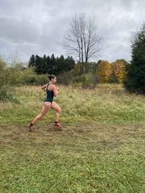

About Running Junkie
Hello everyone! Welcome to the Running Junkie Blog.
I'm Avery McLean, the face behind The Running Junkie. I've been a runner since I was nine, and today, I'm not just a student at Michigan State University; I'm also a proud member of MSU's Varsity Cross Country team. Running is more than just a hobby for me; it's my passion, and I'm thrilled to share that passion with all of you through this blog. At The Running Junkie, we're all about celebrating the joy of running. From picking the right gear to exploring various training methods and the excitement of different races, we've got your running interests covered.So, lace up your shoes, join us on this adventure, and let's dive into the wonderful world of running together.

Image: Avery McLean (Blog Author) running in a cross country race
What I Love About Running
- Staying in Shape
- The Community
- Colorful Gear
- Discovery New Places to Run
- The Challenge of the Sport